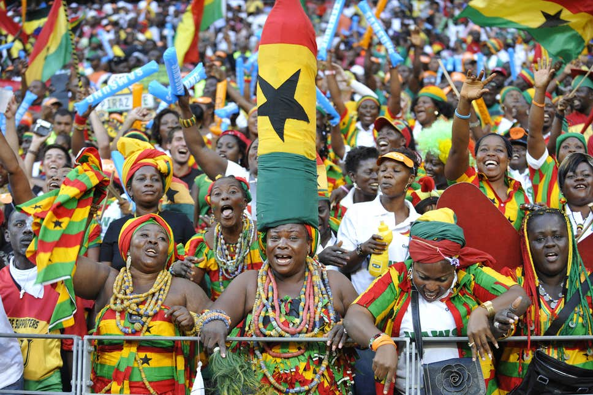
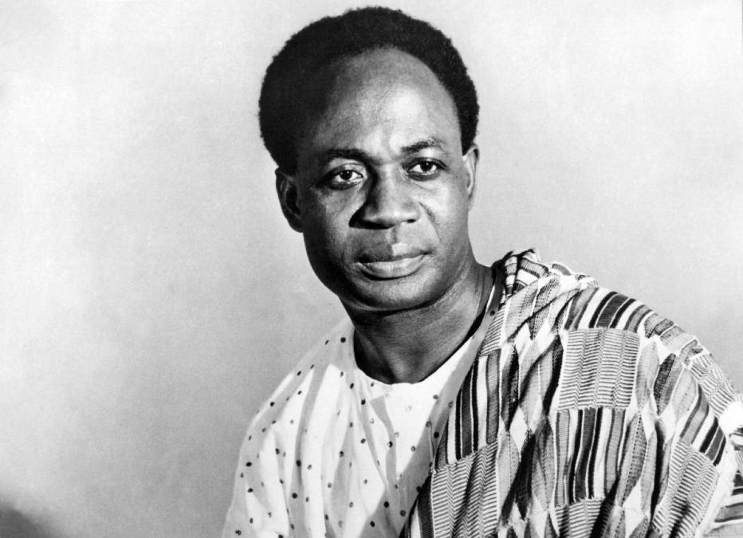
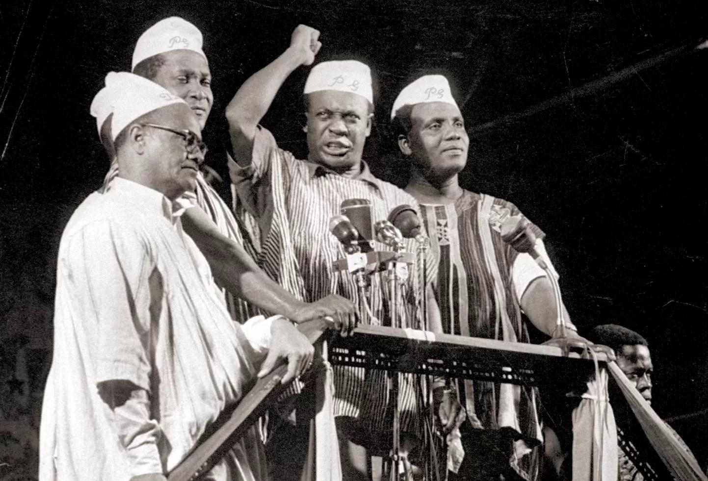

The Gold Coast
Before independence, Ghana was known as the Gold Coast under British colonial rule. The people of the region worked, studied, resisted and organised for self-rule, laying the foundation for a strong national identity.
Ghana @ 70
Ghana’s story is one of courage, vision, unity and determination. From colonial rule to independence on 6 March 1957, our nation has built a legacy of freedom, progress and national pride. Today, as we approach 70 years of independence in 2027, we honour the journey and celebrate the future.

Our Story
Before independence, Ghana was known as the Gold Coast under British colonial rule. The people of the region worked, studied, resisted and organised for self-rule, laying the foundation for a strong national identity.
Nationalists, students, workers and communities united behind the dream of freedom. Leaders such as Osagyefo Dr. Kwame Nkrumah inspired a movement that transformed the struggle into a national cause.
On 6 March 1957, Ghana became the first sub-Saharan African country to gain independence. The event became a symbol of hope, dignity and a new beginning for Africa and the world.
Historical timeline
Historical gallery



Archival collection
Primary sources
Did you know?
The red, gold and green colours symbolise the blood of those who fought for freedom, Ghana’s mineral wealth, and the rich vegetation of the land.
The black star in the middle of the flag represents the hope and freedom of Africa, inspired by the ideals of Pan-Africanism.
“God Bless Our Homeland Ghana” reflects the nation’s faith, unity and pride in its people and progress as a sovereign country.
Dr. Kwame Nkrumah remains one of the most influential figures in Ghana’s independence story and the African liberation movement.
History quiz